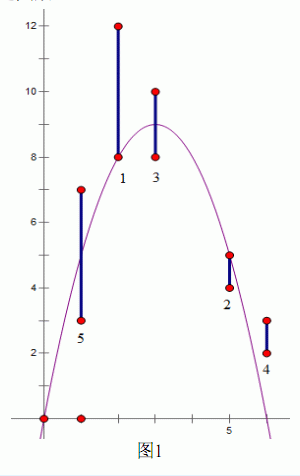

输入文件第一行是一个正整数N，表示一共有N关。接下来有N行，第i+1行是用空格隔开的三个正整数xi，yi1，yi2(yi1<yi2 )，表示第i关出现的靶子的横坐标是xi，纵坐标的范围是从yi1到yi2 。
输入保证30%的数据满足N≤100，50%的数据满足N≤5000，100%的数据满足N≤100000且给 出的所有坐标不超过109 。
沫沫最近在玩一个二维的射箭游戏，如下图 1 所示，这个游戏中的 x 轴在地面，第一象限中有一些竖直线段作为靶子，任意两个靶子都没有公共部分，也不会接触坐标轴。沫沫控制一个位于(0,0)的弓箭手，可以朝 0 至 90?中的任意角度（不包括 0度和 90度），以任意大小的力量射出带有穿透能力的光之箭。由于游戏中没有空气阻力，并且光之箭没有箭身，箭的轨迹会是一条标准的抛物线，被轨迹穿过的所有靶子都认为被沫沫射中了，包括那些 只有端点被射中的靶子。这个游戏有多种模式，其中沫沫最喜欢的是闯关模式。在闯关模式中，第一关只有一个靶 子，射中这个靶子即可进入第二关，这时在第一关的基础上会出现另外一个靶子，若能够一箭 双雕射中这两个靶子便可进入第三关，这时会出现第三个靶子。依此类推，每过一关都会新出 现一个靶子，在第 K 关必须一箭射中前 K 关出现的所有 K 个靶子才能进入第 K+1 关，否则游戏 结束。沫沫花了很多时间在这个游戏上，却最多只能玩到第七关“七星连珠”，这让她非常困惑。 于是她设法获得了每一关出现的靶子的位置，想让你告诉她，最多能通过多少关
输入文件第一行是一个正整数N，表示一共有N关。接下来有N行，第i+1行是用空格隔开的三个正整数xi，yi1，yi2(yi1<yi2 )，表示第i关出现的靶子的横坐标是xi，纵坐标的范围是从yi1到yi2 。
输入保证30%的数据满足N≤100，50%的数据满足N≤5000，100%的数据满足N≤100000且给 出的所有坐标不超过109 。
仅包含一个整数，表示最多的通关数。
5
2 8 12
5 4 5
3 8 10
6 2 3
1 3 7
3

数据已加强By WWT15。特鸣谢！---2015.03.09
数据再加一组---2017.3.25